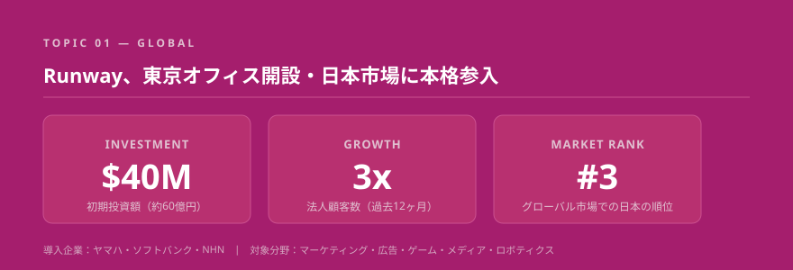
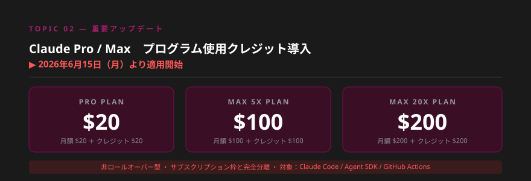
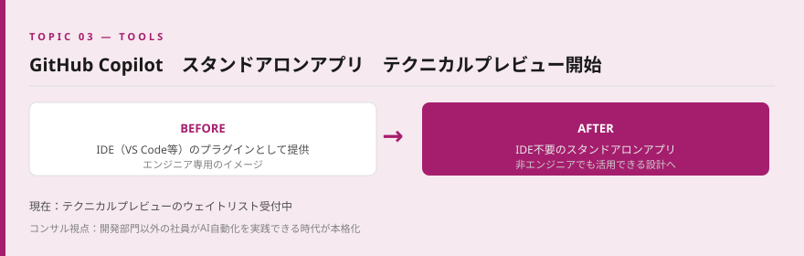
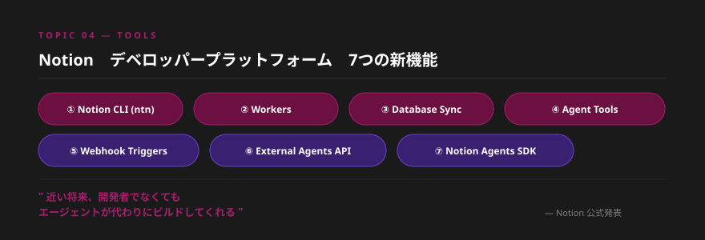
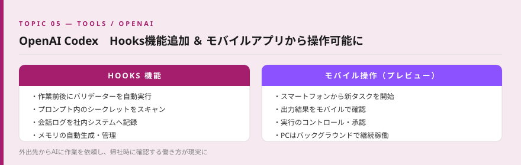
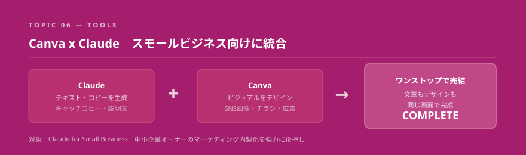
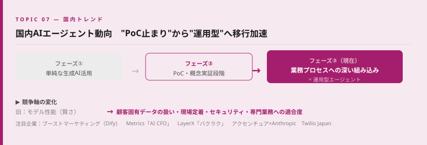
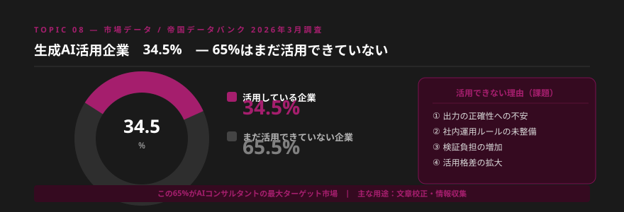
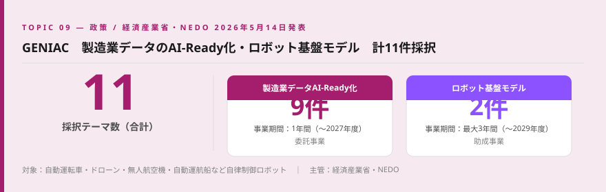
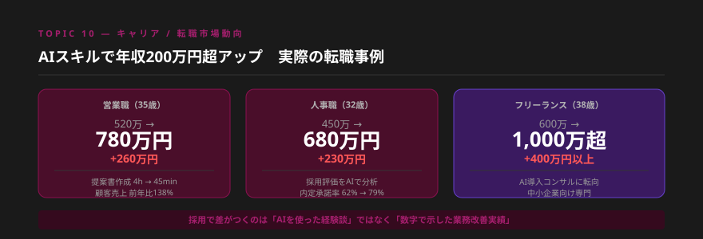

- Runwayが東京上陸・約60億円を投資。海外AI大手が本格的に日本市場を取りにきた。マーケティング・クリエイティブ領域でのAI活用が企業レベルで加速する転換点。
- Claude Pro/Maxに6月15日からクレジット制導入。API・Agent SDK経由のヘビーユーザーは実質コストアップになる可能性があり、AIツールのコスト管理が企業課題に浮上する。
- 帝国データバンク調査で65%の企業がまだAIを活用できていない。「社内ルールがない」「正確性が不安」が課題の本質であり、AIコンサルタントにとって最大の提案機会がここにある。
Topic 01 — Global Runway、東京オフィス開設・約60億円（$40M）を日本市場に投資

何が起きたか
映像生成AI大手のRunwayが、日本市場への本格参入を発表した。東京オフィスを開設し、初期投資として4,000万ドル（約60億円）を投じる。過去12ヶ月で日本の法人顧客数は3倍に増加し、グローバル市場で日本は第3位に位置する。ヤマハ・ソフトバンク・NHNがすでに導入済みで、今後はゲーム・メディア・ロボティクス分野の企業との連携を強化する方針。
噛み砕くと
RunwayはAIで動画・映像をリアルタイムに生成するツールです。マーケティング用の商品動画やSNS広告を数分で作ることができ、これまで数十万円・数週間かかっていた動画制作が劇的に短縮・低コスト化されます。欧米の広告代理店やメディア企業では急速に普及しており、日本でも「ビジネス導入フェーズ」に正式に入ったことを告げるニュースです。
海外AI大手が「日本を本気で取りにきた」シグナルとして非常に重要です。Runwayが東京オフィスを構えるほど日本市場のポテンシャルは高く、AIクリエイティブ領域でのコンサル需要も同時に拡大しています。マーケティング部門・広告代理店・EC事業者への提案において「動画制作コストの削減」は最も数字が出しやすいテーマです。今から得意領域として押さえておく価値があります。
明日から使える業務活用
- Runwayの無料プランで動画生成を試し、「従来の制作コストとの比較表」を数字で作成する
- 既存・見込みクライアントの「動画・広告コンテンツ制作費」を確認し、削減提案書のたたき台を作る
- ヤマハ・ソフトバンクなどの導入事例をリサーチし、業界別の提案トークに活かす
Topic 02 — 重要 Claude Pro / Max にプログラム使用クレジット導入（2026年6月15日〜）

何が起きたか
Anthropicが2026年6月15日より、Claude有料プランにプログラム使用専用の月次クレジットを追加すると発表。プランごとに同額のクレジットが付与される（Pro $20・Max 5X $100・Max 20X $200）。対象はClaude Code・Agent SDK・GitHub Actions・サードパーティAgentツールなど「プログラム経由の利用」。非ロールオーバー型かつサブスクリプション枠と完全分離の設計で、発表後4時間でインプレッション400万超・引用ツイート1,044件の議論が拡散した。
噛み砕くと
これまでClaudeを月$20で契約すると、チャットもAPIもまとめて使えていました。6月15日以降は、APIやClaude Code経由のプログラム的な利用が別枠に分離されます。毎月リセットされる使い切り型のため、APIヘビーユーザーは追加コストが発生する可能性があります。一方でチャットだけを使っている方への影響は限定的です。
AIツールの料金体系が複雑化するほど、「自社に最適なAIツールのコスト設計を整理してくれるコンサルタント」の需要が生まれます。AIを本格導入する企業にとってランニングコストの試算は必須の検討事項です。このニュースを入口に「AIコスト最適化提案」を切り口として営業できます。
明日から使える業務活用
- 自分のClaude利用状況を確認し、6月15日以降の月次費用を事前に試算しておく
- 提案書に「AIツール導入後のランニングコスト概算」セクションを追加する
- クライアントへの定期レポートでAIツールのコスト動向を共有するネタとして活用する
Topic 03 — Tools GitHub Copilot、スタンドアロンアプリをテクニカルプレビュー開始

何が起きたか
GitHubがCopilotの独立したスタンドアロンアプリを発表し、テクニカルプレビューへの早期アクセスウェイトリストの受付を開始した。これまでVS CodeなどのIDEプラグインとして提供されていたCopilotが、IDE不要で使える独立アプリとして進化する。
噛み砕くと
プログラマー向けのAIアシスタントが、エンジニア以外でも使いやすいアプリ形式になってきています。「コードを書く人だけのツール」から「業務でコードや自動化を活用したいすべての人のツール」へ進化する流れです。
開発部門以外の社員（営業・企画・バックオフィス）がAIで自動化を実践する時代が迫っています。「エンジニアがいなくても自動化できる」提案の具体例として今後活用できる重要なツールです。
明日から使える業務活用
- ウェイトリストに登録し、リリース後に非エンジニア向けユースケースを検証する
- 「エンジニア不在の部署でも使えるAI自動化」を次の提案テーマとして検討する
Topic 04 — Tools Notion、デベロッパープラットフォームを発表 ｜ CLI・Workers・Agent SDK

何が起きたか
Notionが大型の開発者向けアップデートを発表した。主な新機能は①Notion CLI（ntn）によるターミナル操作 ②Workers（Notion上でコード実行） ③Database Sync（外部データソースの同期） ④Agent Tools（ワークフロー構築） ⑤Webhook Triggers ⑥External Agents API ⑦Notion Agents SDK の7項目。「近い将来、開発者でなくてもエージェントが代わりにビルドしてくれる」と予告している。
噛み砕くと
NotionがただのメモツールやWikiから、「AIエージェントを動かす基盤プラットフォーム」へ進化しています。Notionを使っている企業なら、そのデータをAIが自動で処理・更新・連携できる仕組みが組める時代になります。すでにNotionを使っているクライアントへの「追加提案」に最適な内容です。
Notionの既存ユーザー企業への「AI自動化アドオン提案」の機会が広がります。ツール導入済みの企業は「新しいツールを入れる」心理的ハードルが低く、すでに使っているNotionの延長として提案できるため、受注率が高くなる可能性があります。
明日から使える業務活用
- Notion CLIをインストールし、ターミナルからの操作を試してみる
- 既存のNotionワークスペースにある「手作業で更新しているデータベース」を棚卸しし、自動化の提案ネタを探す
Topic 05 — Tools OpenAI Codex、Hooks機能追加 ＆ ChatGPTモバイルアプリから操作可能に

何が起きたか
OpenAI CodexにHooks機能が追加され、タスクの前後・途中でスクリプトを挿入してバリデーション・ログ記録・メモリ生成などを自動実行できるようになった。また別途、ChatGPTのスマートフォンアプリからCodexを操作できるプレビューが公開。外出先からタスク開始・出力確認・承認が可能になった。
噛み砕くと
AIコーディングエージェントが「自動で決まった処理を挟める」ようになり、さらにスマートフォンから遠隔操作できるようになりました。PCを会社においたまま外出先でAIに作業を指示・確認できるイメージです。
コーディングエージェントの「自律性」が高まっています。エンジニアでなくてもAIに開発作業を委託しスマホで進捗確認できる働き方が現実になりつつある。非技術職向けの「AIに開発を任せる」提案が具体的に語れるようになる重要なマイルストーンです。
明日から使える業務活用
- ChatGPTモバイルアプリのCodexプレビューに登録して、スマホからの操作感を体験する
- 「移動中にAIに作業を依頼→帰社時に確認」というワークフローを自分で試し、クライアントへの説明材料にする
Topic 06 — Tools Canva × Claude、スモールビジネス向けに統合 ｜ キャンペーン制作をワンストップ化

何が起きたか
CanvaがClaude for Small Businessへの統合を発表した。これにより、Claudeのインターフェース上でCanvaのデザイン機能が直接利用できるようになる。テキスト生成（Claude）とビジュアルデザイン（Canva）がワンストップで完結する仕組みが中小企業オーナーを主なターゲットに提供される。
噛み砕くと
「AIに文章を考えてもらいながら、同じ画面でデザインまで作れる」ようになります。これまでClaudeで文章→CanvaでSNS投稿を作るという2段階の作業が、1つのツールでできるようになる大きな時短です。
中小企業の「マーケティングの内製化」支援が、よりシンプルな提案になります。Claude＋Canvaのセット活用法を提案パッケージとして組み込めるようになり、「SNS・広告コンテンツを社内で作れるようになりたい」というニーズに対して具体的なソリューションを示せます。
明日から使える業務活用
- Claude上でCanvaを連携し、SNS投稿やチラシ制作の流れをデモとして作成してみる
- 「マーケティングコスト削減×内製化」を切り口にした提案書テンプレートを1枚作る
Topic 07 — 国内 国内AIエージェント動向（2026/5/12号）｜ "作って終わり"から"運用型"へ移行加速

何が起きたか
国内AIエージェント市場の最新動向レポート（2026年5月12日号）によると、生成AIの単純活用からPoC（概念実証）段階を超えた「業務プロセスへの深い組み込み＝運用型エージェント」へのシフトが進んでいる。注目プロダクトは以下の通り。
- ブーストマーケティング：Dify活用・中小企業向け6段階支援・20種以上の業界特化エージェント
- Metrics「AI CFO」：中小企業向け経営管理AI・freee/マネーフォワード連携
- LayerX「バクラク契約管理」：契約業務自動化・リース会計基準対応
- アクセンチュア×Anthropic：Claude活用による企業全体のAI変革支援
- Twilio Japan：顧客接点の永続メモリ×マルチエージェント運用基盤
噛み砕くと
「試しに使ってみた」段階から、「業務に完全に組み込んで毎日動かす」段階へ市場が進化しています。競争軸もAIの賢さ（モデル性能）から、「どれだけ現場に定着させられるか」「既存システムと繋げられるか」「セキュリティを担保できるか」に変わっています。
「AIを導入する」だけでなく「定着・運用させる」ところまで支援できるコンサルタントの価値が急上昇します。提案書に「導入後3ヶ月の定着支援プラン」を盛り込むだけで、競合との差がつきます。
明日から使える業務活用
- 自分の提案書に「導入後サポート・定着支援プラン」のセクションを追加する
- ブーストマーケティング・Metrics・LayerXの事例を調べ、業界別の成功パターンを把握する
- 提案するAIエージェントの「業務フローへの組み込み方」を図で示せるようにする
Topic 08 — 市場データ 帝国データバンク調査 ｜ 生成AI活用企業34.5%、65%は「活用できていない」現実

何が起きたか
帝国データバンクが発表した「生成AIに関する企業の動向調査（2026年3月）」によると、生成AIを業務で活用している企業は34.5%。主な用途は文章校正・情報収集。効果実感は高い一方、出力の正確性への不安・社内運用ルールの未整備・検証負担の増加が課題として挙がっている。また、活用できる企業とできない企業の二極化拡大も懸念されている。
噛み砕くと
日本企業の3社に2社はまだ生成AIを使えていない状態です。使えていない理由は「難しいから」ではなく、「AIの回答が合っているか自信がない」「社内でどう使っていいかルールがない」という運用面の課題が中心です。つまり、技術的な問題より組織・ルール・教育の問題なのです。
この65%が、AIエージェントコンサルタントとして最大のターゲット市場です。彼らが求めているのは「最新AIツールの紹介」ではなく、「自社でどう使えばいいかを一緒に考えてくれる人」です。提案の切り口は「社内AI利用ガイドライン策定支援」「スモールスタートの業務自動化」「正確性を担保するAI活用フロー設計」が有効です。
明日から使える業務活用
- 「生成AI社内利用ガイドライン策定パッケージ」として提案書のたたき台を1枚作る
- 「AI出力の正確性チェックフロー」を簡単な図で作り、提案資料に組み込む
- 34.5%という数字を営業トークで活用し、「同業他社がすでに動いている」という緊張感を引き出す
Topic 09 — 政策 経産省・NEDO ｜ GENIAC：製造業データのAI-Ready化・ロボット基盤モデル計11件採択

何が起きたか
経済産業省とNEDOが推進する生成AI開発強化プロジェクト「GENIAC（Generative AI Accelerator Challenge）」にて、製造業データのAI-Ready化9件・ロボット基盤モデル2件の研究開発テーマを採択（2026年5月14日発表）。AI-Ready化は2026〜2027年度の1年間、ロボット基盤モデルは最大2029年度まで最大3年間の事業期間。対象は自動運転車・ドローン・自動運航船などを直接制御するロボット基盤モデルの開発支援。
噛み砕くと
国がお金を出して「製造業の工場データをAIが使える形に整える研究」と「自動運転・ドローンなどを動かすAI開発」を支援します。「日本もAIを使いこなせる国になるぞ」という国家レベルの本気度を示すニュースです。
製造業へのAI導入が国の追い風を受ける時代です。補助金・助成金を活用したAI導入支援という切り口が、製造業クライアントへの提案に説得力を持ちます。「国が支援するほど重要なテーマ」というフレーミングは、経営層の意思決定を後押しします。
明日から使える業務活用
- GENIACの採択企業・テーマ一覧を確認し、製造業クライアントへの提案時の参考資料にする
- 「NEDO補助金×AI導入」の組み合わせ提案を検討し、製造業向けの差別化ポイントにする
Topic 10 — キャリア AIスキルで年収200万円超アップ ｜ 転職事例から学ぶ「数字で語る実績」の作り方

何が起きたか
2025〜2026年にかけてAIスキルを武器に年収を大幅アップした転職事例が続出している。主な事例は以下の通り。
- 営業職（35歳）520万→780万円（+260万）：ChatGPTで提案書作成時間4時間→45分・顧客売上前年比138%達成
- 人事職（32歳）450万→680万円（+230万）：AI活用で採用評価分析・内定承諾率62%→79%に改善
- フリーランス（38歳）600万→1,000万超：中小企業向けAI導入コンサルティングに転向
採用市場では「AIを使った経験」より「業務改善の数字（時間削減・精度向上・売上改善）」が圧倒的に評価されている。
噛み砕くと
「AIを使っています」と言うだけでは差がつきません。「AIを使って◯時間削減した」「◯%改善した」という数字があって初めて評価されます。エンジニアでなくても、営業・人事・企画職でAIを使った業務改善実績があれば年収が大きく動く時代です。
このプログラムで作っているポートフォリオは、まさにこの「数字付き実績」になります。今から業務に使いながら「改善した数字」を記録しておくことが、3ヶ月後の案件獲得・受注単価に直結します。クライアントへの提案でも同じ論理が使えます。「AIを導入しましょう」ではなく「導入後に◯%改善できます」という提案が刺さります。
明日から使える業務活用
- 過去の業務でAIを使って改善したこと（時間・精度・コスト）を3つ書き出す
- 今後の実践では必ず「Before / After」の数字を記録し、ポートフォリオに蓄積する
- 提案書のゴール設定に「◯%改善」「◯時間削減」の目標値を入れるクセをつける
今週のまとめ ｜ コンサルタントとして今すぐ動くべきこと
今週のニュースに共通するテーマは「AIの社会実装が、確実に次のフェーズに進んでいる」という点です。Runwayの日本進出・経産省のGENIAC採択・帝国データバンクの調査データ、どれも同じ方向を示しています。
帝国データバンクの調査が示す通り、65%の企業はまだスタートラインにも立っていません。これはネガティブなデータではなく、AIコンサルタントとしての市場規模を示す数字です。今このプログラムで学んでいることは、その65%が必要としているものに直結しています。
「数字で語れる実績」「定着まで支援できるコンサル力」「ツールのコスト変化を素早くキャッチする情報感度」——この3つを今週から意識して積み上げていきましょう。
| # | 今週すぐできるアクション | 期待効果 |
|---|---|---|
| 1 | Runwayで動画を1本生成し、制作時間を計測する | コスト削減提案の根拠データ |
| 2 | Claude利用状況を確認し、6/15以降のコストを試算する | 自社コスト最適化・提案ネタ |
| 3 | 提案書に「定着支援プラン」セクションを追加する | 競合差別化・受注率向上 |
| 4 | AIで改善したBefore/Afterの数字を3つ書き出す | ポートフォリオ・営業トーク強化 |
| 5 | 「生成AI社内ガイドライン策定」の提案書たたき台を作る | 65%の未活用企業へのアプローチ |